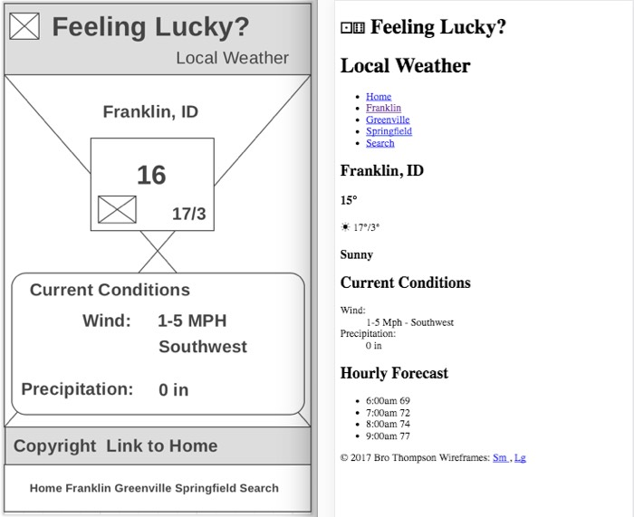

Franklin - Layout
Overview
Last week we started build our weather site by writing the HTML for the first page...Franklin. You may have noticed that while we followed the wireframe closely to make sure we got all of the content onto the page, the final product didn't look very much like the wireframe. We are going to fix that this week with CSS.
Adding CSS
From the readings hopefully you recall that there are 3 ways to add CSS to HTML.
- Inline
- Internal Stylesheets
- External Stylesheets
Inline should only be used for troubleshooting and other very specific circumstances. Internal stylesheets and external stylesheets are actually very similar, but external are superior in one very important way: they are much more reusable...the same stylesheet can be attached to all the pages of a site.
We will be using external stylesheets exclusively for this course.
Tasks
- Review the small wireframe to remind yourself of how it should look...where the different elements are in relation to each other. Keep it handy as we will be referring back to it often.
- Create a new file in your editor and save it in the weather folder with a name that keeps in mind the naming rules we talked about earlier. This new file will not end with
.htmlhowever. This time we need a.cssextention on the file. I often name my primary stylesheet something likemain.cssorstyles.cssFile extensions
So what is up with these very particular rules for naming these files? Last week we needed a
.html, this week requires a.css. These 3 character additions to our filenames are called extensions and are used by the operating system to identify of what type each file is that is stored on it.Almost all files have these actually...but a few years ago the operating systems developers decided that people didn't need to see them anymore and so they are hidden by default on Windows and Mac OS.
If we don't name our HTML and CSS files with these extensions the browser will not know how to interpret them correctly...in other words our html and css will not look like we want it to.
Lets add a bit of CSS to our new file. Enter the following:
* { box-sizing: border-box; /* changes width property to total width instead of content width */ } article, aside, footer, header, nav, section, main, figcaption, figure { display: block; /* just in case we have any older browsers that don't recognize the HTML5 semantic elements */ } body { margin: 0; /* remove any margin from body to avoid unsightly gaps. */ padding: 0; /* ditto for padding */ background-color: salmon; }Hopefully that looks somewhat familiar. You should notice the css pattern of
selector { property: value; }that was in the reading repeated 3 times. The top selector is one you may not have seen before. It is called the universal selector and will select every element on the page. It should be used carefully, but in this case in is necessary to switch how our browser calculates width.
The next rule is a 'just in case' sort of thing. Older browsers won't recognize the HTML5 semantic elements, so this rule gives them a bit of guidance so that our page does not break.
The third rule removes any margin and padding from the
bodyelement. If we don't do this sometimes you will get an small gap around your page that might not be desirable. Thebackground-color:is just there so that we can tell if things are working. We will remove it later.If the code above looks completely confusing to you then make sure to revisit your notes or the readings from this unit...and you should also seek out some help as well. W3schools again has a good CSS tutorial. If the code above troubles you spend some time working through the first 3-4 sections of that tutorial.
-
The next step is to connect our CSS to our HTML. This is done with the
<link>tag. If you used my boilerplate from last week you should have one already...if not you will need to add it now.The tag should look something like this:
<link rel="stylesheet" type="text/css" href="main.css" >Add this line if you don't have it yet in the
<head>portion of your page now. Thehref="main.css"would indicate that I have a stylesheet called "main.css" in the same directory as the HTML file I am working on that I would like to link. If your file is not called "main.css" change that to whatever you named your file. If you chose to create a directory to store all your css in (very common practice) and your css file is in the directory, you will need to add that your path.Check your page now in the browser. If everything is linked up correctly you should see a lovely salmon background on your page. :) If your background is still white, something went wrong and it's time for a bit of troubleshooting.
The first thing to check is that your CSS is linking correctly with your HTML. Open up the browser developer tools console. (alt+cmd+J on the mac in chrome or ctrl+shift+J on Windows. Chrome keyboard shortcuts, or you can right-click and "inspect element" then click on the Console tab)
Do you see any errors? If you see a "Failed to load resource" error it means the browser cannot find your css file...check the path in the
hrefattribute of thelinkelement.If you don't see any errors in the console then you probably have an error in your css. Validate!
-
Now we are ready to start adding CSS to layout our page. Before we can do that however we need to know what exactly needs to be done. Pull up your franklin html page in the browser and set it to a mobile size...then pull up the small wireframe next to it so you can compare. This is what I see:
Take a few minutes and make a list of all of the changes that you see that need to happen...the steps to get from right to left. Be as specific as you can. Once you have made your list click below and compare your list with mine. Don't peek until after you make your list!
To Do
- Move the "Local Weather" to the right
- Move "Local Weather" up closer to "Feeling Lucky"
- Remove the bullets from the list of links and remove the default padding from the list.
- Make the links flow horizontally, and take up an equal amount of space each
- Correct the height on the navigation bar
- Move the navigation bar to the bottom.
- Add a bit of space on the bottom of the page so that the footer is not hidden by the navigation bar
- Make sure that the main blocks that make up our page flow vertically
- Make sure the main blocks that make up our page are centered
- Make the current condition summary icon and high/low flow horizontally, with each one on the right edge and one on the left edge
- Hide the current conditions summary text and the Hourly details.
How did you do? If you got all of them great job! If you got all but e. and g., again great job! Those two in particular are not very apparent if you haven't done something like this before.
If I had come to you with the screenshot above and said "Make the right side look like the left" and then walked away, how would you have reacted? I would imagine in the class the reactions would have ranged from confidence to terror! Taken as a whole moving from the one to the other is a bit much to contemplate. The exercise that you did where you broke down the large task into as small of steps as you could is called critical or analytical thinking or problem solving. This is a valuable (critical) skill in just about every field.
Making a list as we have will normally take a problem that might appear beyond our abilities and turn it into something we can imagine ourselves doing. Look at the top item in the list: "Move the 'Local Weather' to the right" Is that something that you know how to do? Is it something that you could figure out how to do? I would say yes.
I would encourage you to approach all of your assignments this way. Start by figuring out in plain language what needs to happen, then translate those steps into HTML/CSS/JS. If you make your steps small enough, the translation of each step is often very easy.
"...by small and simple things are great things brought to pass;" Alma 37:6
-
Armed with our list we can now start working on the items. We will start together, and leave the remainder for you to finish up. Lets start with
mainportion of our page...items h and i.Anytime I see the terms "flow" and "horizontal" or "vertical" I immediately think of flexbox. Those types of things are exactly what flexbox was designed for. If you review that link above you will remember that at the core of flexbox is the concepts of parent/child, and axis. The first step when using flexbox is to identify the elements we want to move...then find their immediate parent.
My HTML looks like this for that portion of the page:
<main> <section class="overview"> ... </section> <section class="cur_conditions"> ... </section> <section class="hourly"> ... </section> </main>The elements we want to make sure are flowing vertically are the
sections that most of our content is in. The parent of those elements ismain. That will be our flex parent. If we add the following to our css it will turn flexbox "on" for the children ofmain:main { display: flex; }After adding that last line you may have noticed that the elements that were flowing vertically like we wanted are now flowing horizontally! That's not much of an improvement. Why turn on flexbox at all if it's going to cause problems for us...
The reason is item i in our list above. It wants us to make sure all of the elements in the main portion of the page are centered. Flexbox has excellent alignment controls that we will want to take advantage of. Not to mention, if you refer back to the large wireframe eventually we are going to need to switch these elements back and forth from column to row based on the width of the browser. Flexbox will make that really easy.
We can switch the flow back to vertical and center those elements with 2 more lines of CSS. My rule ended up like this:
main { display: flex; flex-flow: column nowrap; align-items: center; }Two down, nine to go.
-
Lets tackle the navigation next, items d, e, and f.
Notice that d. mentions "flow" again. Probably another good time for flexbox. Again we need to identify the things we are trying to move, then find their parent. In this case we need to move the list items that hold our links. So our flex parent will be the
ul. Try adding the following rule:ul { display: flex; }What happened? The list of links should have switched to a horizontal flow...but did you notice the hourly list? It also went horizontal! Our selector said change all unordered lists...and it did. We need to be more specific so that only the unordered lists that we want change and not all of them.
Take a minute to review this selector list do you see anything there that might let us select the nav list but not hourly list?
Did you notice the " " (space) selector. It is know as the descendant selector. According to W3schools
div pwould do this: "Selects all <p> elements inside <div> elements". Theulwe want to target is inside of anav, and the other is not. Sounds hopeful.Modify your css to use the descendent selector to make sure we only get
ulelements that are inside ofnavelements. You will know you have it right when one list is horizontal and one vertical on your page.You may have noticed that our list is very narrow now. Thus item e. If you goto W3schools and search for "height" you should get a few hits. The two that look the most promising to me are
heightandline-height. Try using each of those to increase the height of your navbar. Make sure to notice the difference between their behavior.On the wireframe the navbar is actually on the bottom of the screen. The easiest way to move something like that is by using the
positionproperty. In this case we want to move the entirenavelement, and a value ofabsoluteorfixedwould work. Try the following CSS:nav { position: fixed; bottom: 0; left: 0; right: 0; }Basically that tells the element to use the fixed positioning, and to have the left edge of the element on the left side ot the screen (left:0), the right edge of the element on the right side of the screen, and the bottom edge of the element on the bottom of the screen. Try taking off the left and right properties to see what happens. Or change the 0 to some value.
-
The first 2 items in the list deal with the title at the top. The first thing we should do here is to make sure that our HTML is structured correctly. We can save ourselves a lot of time and effort by doing this. I need the two headlines to act together as one unit for some of this, and as two parts for other steps. My HTML for that portion of the page looks like this:
<div class="title"> <h1><span >⚀</span><span >⚅</span> Feeling Lucky?</h1> <h1>Local Weather</h1> </div>I needed some way of selecting these headlines and differentiating them from other headlines, so I added a
classattribute with a value oftitleto the container that they are both in. I can now use that to write some CSS. First step above was to take our subheading "Local Weather" and right align it. That is just plain text...inline elements and so we can usetext-alignin this case. The rule might look like this:h1 { text-align: right; }If you add that to your CSS however, you will notice that both of our headlines will move to the right. We need to be more specific with our selector.
We have a couple of choices here. We could add another class to the
h1around "Local Weather", and then write a css rule using that. Attaching classes to everything can often cause problems however. Take a minute to review this selector list again. Do you see anything there that might let us select the second headline in thatdiv?Ah...did you notice the "+" selector? It's called the sibling selector and according to the description
div + pwill do this: "Selects all <p> elements that are placed immediately after <div> elements". So what would happen then if we triedh1 + h1? It would select everyh1tag that followed immediately after anotherh1. Perfect!We should use that selector...but we can actually make it a little safer at the same time. Let's use the descendant selector again. The headlines we are targetting are inside of a
divwith aclassoftitleHow could we add that information to make sure our rule only applied to an h1 that followed another h1 that was inside of an element with class="title"?My css rule now looks like this:
.title h1 + h1 { text-align: right; }Read in english this would be: "select any h1 elements that follow an h1 element and are inside of an element identified with a class of title".
We have one more task related to this element. We also need to move it closer to the preceeding title. We have a selector already that we can use targetting that element. How can we move it closer? Remember that
marginis the space between two elements. Margins can have positive or negative values. Try adding the following to your rule:margin-top: -.7em; -
We have now worked through most of our list...there are 4 items left for you. Complete the layout of the Franklin weather page by completing the rest of the list items: c, g, j, and k.
- Validate your page. Make sure to check both the HTML and CSS now. The easiest way to do this would be to use the Developer tools you installed in the first week. Fix all errors.
- Make sure the link on your temporary homepage to this page is still working properly. Then make sure to commit and sync your work in Github Desktop. Check your URL (should look like githubusername.github.io) to make sure all of your changes show, and to check that your images all work.
Grading Matrix
This assessment will be graded for two objectives: 2 and 6.
Objective 2 - 15 points
- All CSS is applied with an external stylesheet - 3 points
- CSS is organized with whitespace and comments - 3 points
- Primary layout of the page is done with Flexbox with minimal use of position or float - 3 points
- Responsiveness: The page layout renders in a mobile size screen without requiring zooming - 3 points
- The page is valid CSS3 - 3 points
Objective 6 - 10 points
- Layout looks like the small wireframe. Only content on the small wireframe is shown - 3 points
- Assignment submitted on time - 4 points
- No Grammar or spelling errors - 3 points